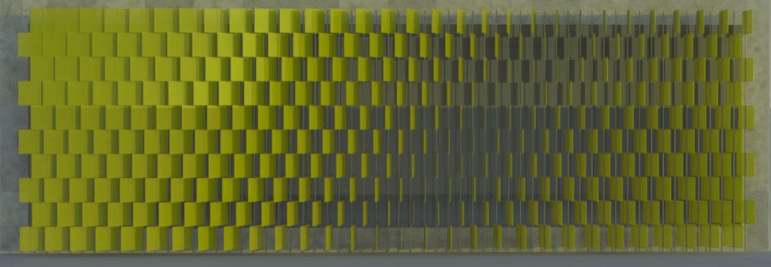
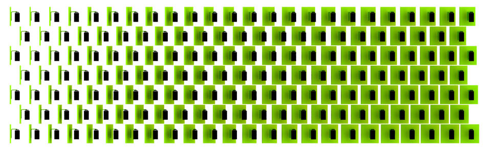
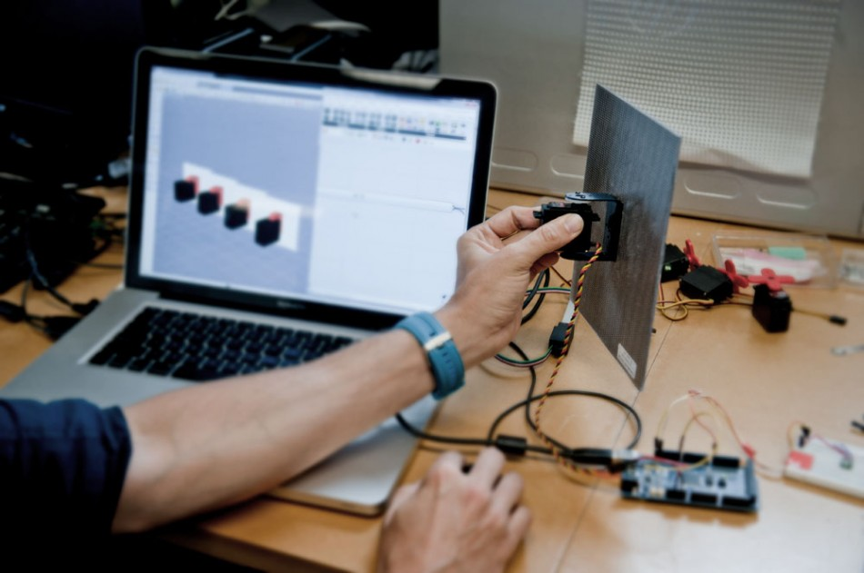
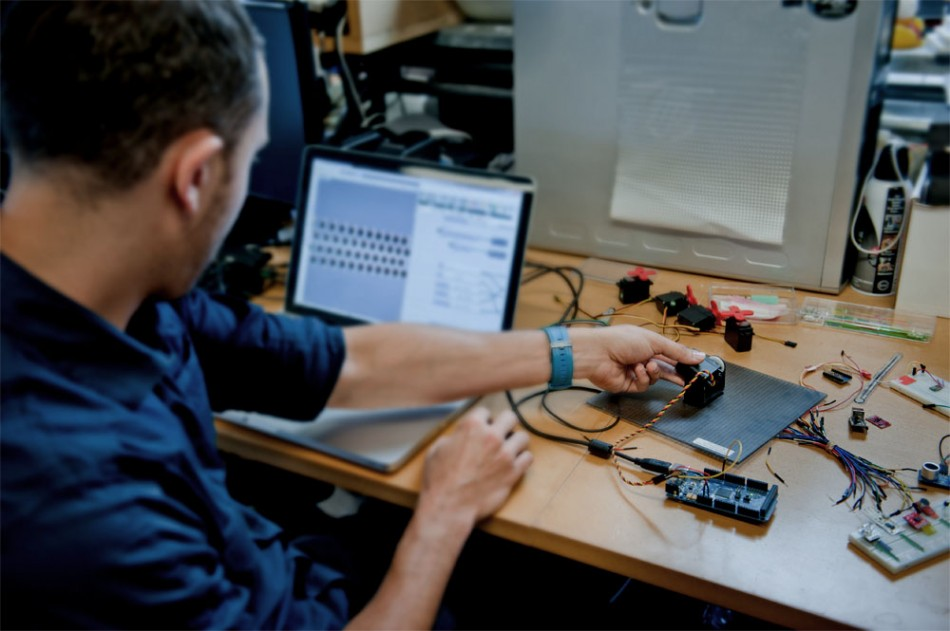
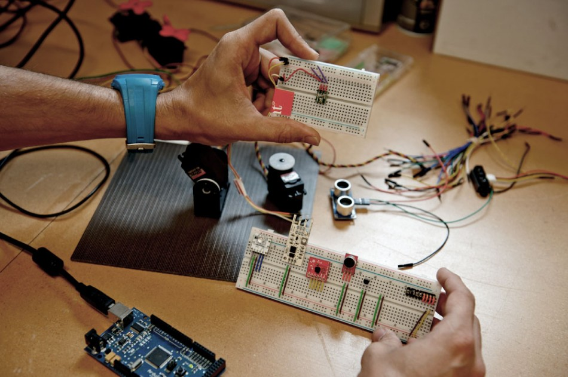

I have experimented with a series of kinetic building skins that respond to various environmental stimuli. This system is quite simple and fairly straight forward to prototype. An array of square panels controlled by robotic servos create a field that allows for a surprising amount of control. Each panel acts like a pixel and is highly customizable allowing for a multitude of configurations at the push of a button or in response to a physical sensor. I am currently working with a coe worker Yan Krymsky on the construction of a fully functional umbrella-like kinetic shading system which uses an elastic material draped over a series of horizontal actuators allowing the material to morph and adapt in different ways, the prototype should be pretty interesting, check back for updates.
    